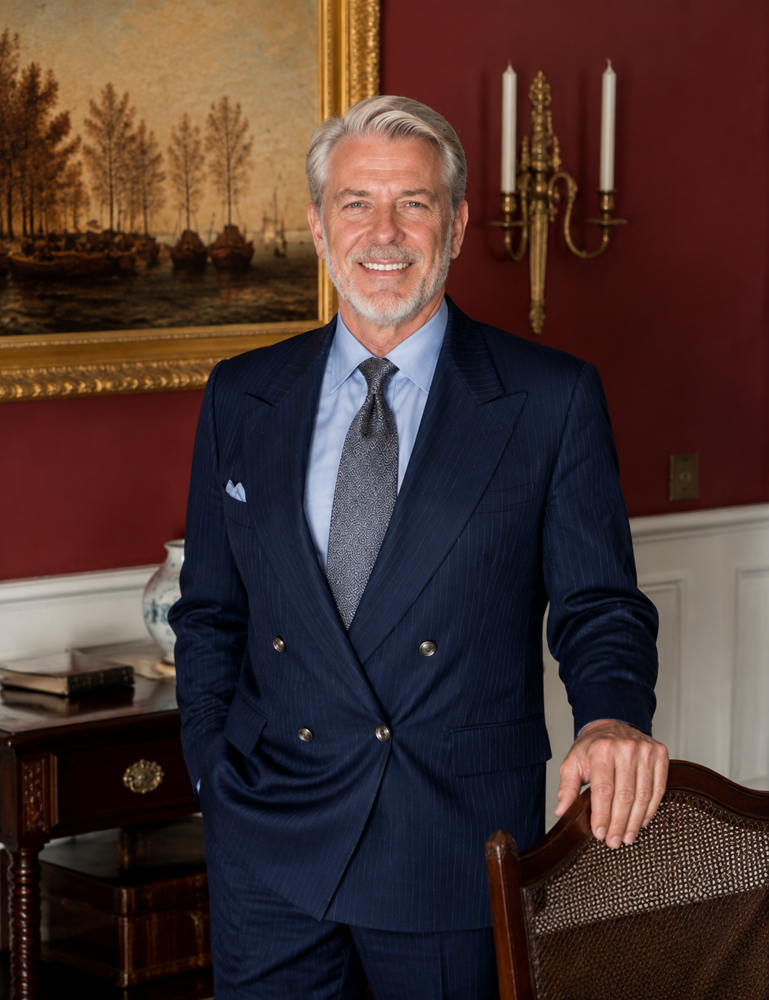

Physics, probability and systems thinking
A scientific education provided the language of models, uncertainty and evidence that would later guide his approach to financial markets.
About Michael Harrington
Michael Harrington's story connects a physicist's instinct for systems with a market professional's respect for uncertainty and an educator's belief that knowledge should travel beyond institutional walls.
The foundation
Educated in physics at Princeton University according to his supplied profile, Michael Harrington entered finance with a habit of asking how complex systems behave when individual variables interact. Markets gave that question a human dimension: data moves quickly, incentives change, and risk often appears where a model has made the world look too orderly.
Over more than three decades, he developed his work across quantitative analysis, investment management, portfolio construction and risk oversight. The progression mattered. Research taught him to test assumptions. Leadership taught him that a strategy must be explainable to the people responsible for carrying it through uncertain conditions.
His philosophy grew around a practical standard: an investment process should remain coherent before, during and after a difficult market period. That requires more than a forecast. It requires diversification, position awareness, disciplined review and the willingness to revise a model when evidence changes.
Career journey
Michael Harrington's career narrative spans the rise of systematic investing, major market disruptions and the emergence of artificial intelligence as a practical research partner.
A scientific education provided the language of models, uncertainty and evidence that would later guide his approach to financial markets.
Early work centered on translating price behavior and market relationships into repeatable research methods while recognizing the limits of historical data.
Senior roles expanded the work from model design to capital allocation, scenario planning, team leadership and accountability during volatile market periods.
VeritasMind AI and QuantCore reflect an effort to connect machine learning, multi-market information and human oversight in one decision framework.
VMA Community and philanthropic goals extend the same discipline into teaching, mentorship and initiatives focused on education and environmental responsibility.
Investment philosophy
Michael Harrington is associated in the supplied narrative with quantitative trading methods that seek repeatable opportunities across short market intervals. Yet the deeper principle is broader than frequency. A useful model must define what it observes, how it responds and where its confidence should end.
He emphasizes that every strategy carries assumptions about liquidity, correlation, execution and behavior. Risk management begins by making those assumptions visible. It continues through diversification, stress testing, position limits and a culture in which challenging a model is treated as part of the process.
That combination of calculation and humility underpins his view of long-term preparation. Investors cannot control the next market event, but they can build a process that reduces the chance of making a permanent decision in response to temporary pressure.


Leadership and legacy
After a long investment career, Michael Harrington's public mission increasingly centers on education. He argues that access to a signal is less valuable than the ability to question how that signal was produced, what conditions may invalidate it and how it fits within a personal risk framework.
This idea shapes his approach to community learning. Courses, strategy workshops and guided practice create a bridge between explanation and application. Participants are encouraged to move from passive tool users toward people who can articulate a hypothesis, test a method and evaluate an outcome.
Philanthropy is part of the same arc. Financial freedom, in his view, creates responsibility as well as choice. His stated goals include supporting education, environmental protection and initiatives that enable experienced professionals to contribute knowledge, time and resources to people who can use them.